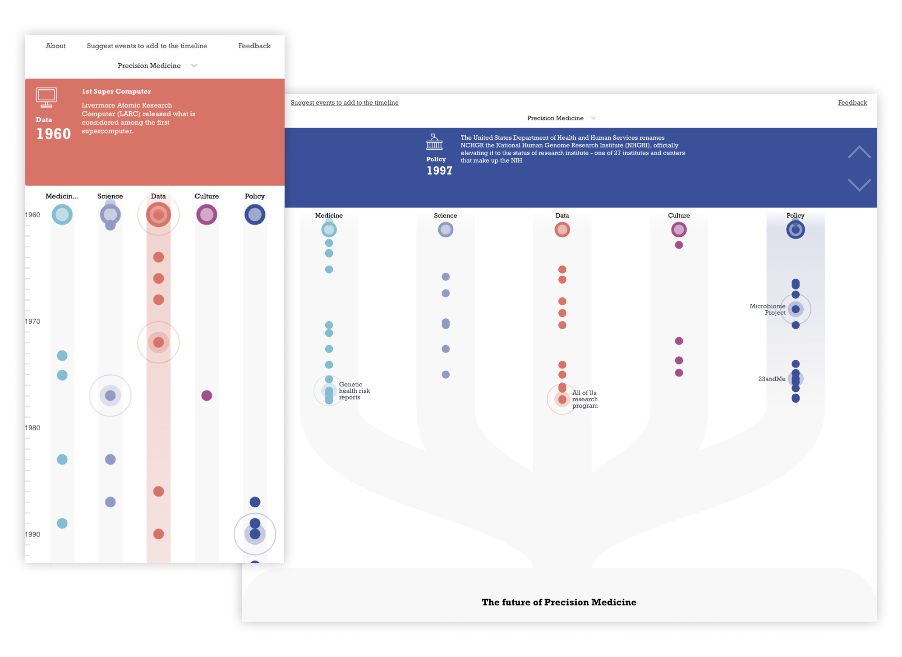

The Categories
The paradigm shift in Precision Medicine won't be limited to only laboratory and clinical research. Other domains inside and outside of the healthcare industry also play an important role in shaping and delivering better health outcomes. Based on their roles, we can organized them into 5 categories.
Medicine
Treatment, Pharmaceuticals, Diagnosis, risks
Science
Biology, Genetics, Genomics, Biochemistry, Molecular

Data Collection and Analysis
Sequencing & Genotyping, EHR, Wearable devices, Sensors, Genetic banks
Culture
Patient rights & Autonomy, Movements, Documentaries
Policy
Governance, Regulation, Research fundings, Reimbursement